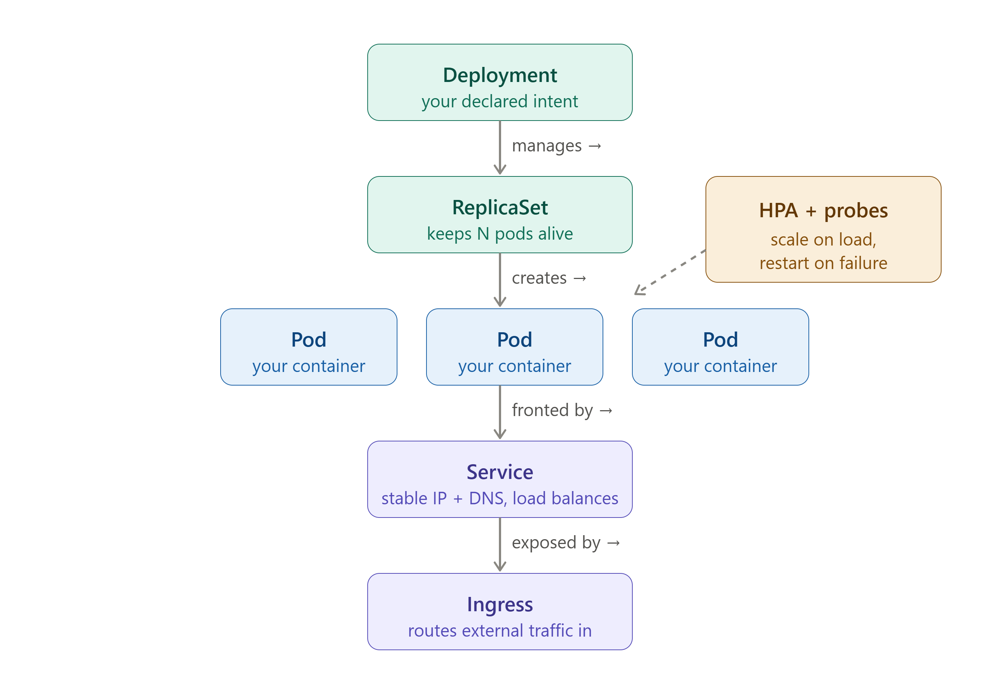

M4 — Kubernetes Core¶
Core question: You have a Docker image in a registry. How do you run it reliably across many machines, keep it alive when it crashes, and reach it via a stable address — without babysitting it?
⏱️ Time: ~75 min padho + 40 min lab · 🎚️ Level: Intermediate · 📋 Pehle chahiye: M0, M3
Is module ke baad tum kar paoge: - Deployment, Service, aur readiness probe YAML likhna aur
kubectl applyse cluster pe deploy karna - Self-healing demonstrate karna:kubectl delete podke baad automatic replacement dekhna -CrashLoopBackOff,Pending, aurImagePullBackOffdebug karna —kubectl describese exact cause nikalna
MODULE MAP
00-INDEX · 01-M0-foundations · 02-M1-terraform · 03-M2-ansible · 04-M3-docker · 05-M4-kubernetes-core · 06-M5-sizing-and-cost · 07-M6-cicd · 08-M7-gitops · 09-connected-system · 10-M8-observability-sre · 11-M9-advanced-k8s-internals · 12-capstone-url-shortener · 13-capstone-microshop · 14-interview-bank · 15-roadmap · 16-reference-appendix
↩️ Recall gate — shuru karne se pehle¶
Pichhle modules se 3 sawaal. Pehle memory se jawab do, phir kholo. (Yeh retrieve karna hi lifetime yaad rakhta hai — dobara padhna nahi.)
- (M3) Docker image mein
:latesttag production mein kyun dangerous hai, aur uski jagah kya use karna chahiye?- (M1) Terraform
plancommand kya karta hai, aurapplyse pehle kyun zaruri hai?- (M0) "Pets vs cattle" ka infrastructure mein kya matlab hai? Kubernetes pods kahan fit hote hain?
Jawab
:latestmutable hai — alag time pe pull karo to alag image mil sakti; rollback impossible. SHA digest pin karo — immutable, traceable. 2.plan= dry run — batata hai kya badlega bina kuch badlaye; unexpected changes pakdo apply se pehle. 3. Pets = unique hand-crafted servers (toot jaaye to rona). Cattle = interchangeable units (koi bhi maare, naya la do). Kubernetes pods = pure cattle — ek crash kare, K8s naya banata hai.
The 60-second version¶
Kubernetes (K8s — the 8 letters between K and s) is a cluster manager that keeps containers running across many machines. You write a YAML file that says "I want 3 copies of this container." Kubernetes reads it, creates those containers on worker nodes, and then watches 24/7. One crashes? It starts a new one automatically. You never typed "start container" — you declared desired state, and K8s drives current state toward it forever.
That one idea — declare desired state, let the system reconcile — is the entire mental model. Everything else is detail.
Why this exists / what it replaced¶
Before orchestrators, the typical approach was:
- SSH into a server, run
docker run myapp. - If it crashes, it stays dead until someone notices and restarts it manually.
- To run 10 copies, SSH into 10 servers and run 10 commands.
- Rolling update? Log into each server one by one.
- "The server that must never reboot" — a pet machine nobody dares touch because everything depends on it running.
This produced the pet server anti-pattern: a unique, hand-crafted machine with undocumented state accumulated over months. When it dies, the team scrambles.
K8s replaces this with cattle pods — disposable units. If a pod (container wrapper) dies, K8s immediately spins up a replacement. Servers are interchangeable workers, not irreplaceable pets.
What K8s adds over raw Docker:
| What you get | Docker alone | Kubernetes |
|---|---|---|
| Self-healing (restart on crash) | No | Yes |
| Run across many machines | No | Yes |
| Rolling updates with zero downtime | Manual | Built-in |
| Horizontal scaling (more copies) | Manual | One command / auto |
| Stable network address for pods | No | Service object |
| Health-check gating (no traffic to broken pods) | No | Probes |
The one big idea: reconciliation¶
This is Golden Thread 1 — the same idea runs through every tool in this handbook:
- Terraform: you declare infra, it drives reality toward it (see
02-M1-terraform). - Ansible: you declare machine state, it converges there (see
03-M2-ansible). - Argo CD: you declare cluster state in Git, it applies it (see
08-M7-gitops). - Kubernetes: you declare pod count and configuration, it maintains them 24/7 without you.
See
09-connected-systemfor a full map of how reconciliation threads every tool together.🔮 Predict pehle (socho, phir aage padho): Ek Deployment me
replicas: 3hai. Tum ek pod kokubectl deletekar do — ab kitne pods honge, aur kaun banata hai unhe?
How it works¶
K8s runs a control loop — a tight loop that never stops:
loop:
desired = read from etcd ("replicas: 3")
current = count running pods
if current < desired: start new pods
if current > desired: delete excess pods
sleep(a few seconds)
repeat forever
🇮🇳 Hinglish intuition: Ye ek chowkidar hai jo 24/7 ginta rehta — "teen chahiye the, do hain, chalo ek aur banao." Raat 2 baje bhi, Sunday ko bhi, woh nahi ruka. Docker mein yeh chowkidar tha hi nahi — container chala ke bhool jaata.
Desired state = what you wrote in YAML (replicas: 3).
Current state = what is actually running right now.
Reconciliation = the loop that closes the gap between them.
The critical consequence: you do not tell K8s how to fix things. You tell it what you want. It figures out the how. This is declarative, not imperative — same philosophy as Terraform.
The object chain¶
Every workload in K8s follows this four-layer chain:
flowchart TD
DEP["Deployment<br/>(replicas: 3)"]:::ctl
RS["ReplicaSet<br/>(desired = actual?)"]:::ctl
P1["Pod 1"]:::run
P2["Pod 2"]:::run
P3["Pod 3<br/>(crashed)"]:::run
PNEW["New Pod 3<br/>(auto-replaced)"]:::run
DEP -->|"creates / owns"| RS
RS -->|"creates"| P1
RS -->|"creates"| P2
RS -->|"creates"| P3
RS -. "detects crash, starts replacement" .-> PNEW
classDef ci fill:#e3f2fd,stroke:#1976d2,color:#0d47a1;
classDef store fill:#fff3e0,stroke:#ef6c00,color:#e65100;
classDef run fill:#e0f2f1,stroke:#00897b,color:#004d40;
classDef ctl fill:#ede7f6,stroke:#5e35b1,color:#311b92;
classDef shared fill:#fff9c4,stroke:#f9a825,color:#4a3800;Deployment → ReplicaSet → Pods: the ReplicaSet reconciles desired count 24/7 — a crashed pod is automatically replaced with no human intervention.
Text version (ASCII)
┌─────────────────────────────────────────────────────────┐
│ DEPLOYMENT 👔 │
│ "Keep 3 replicas of this pod spec always running" │
│ Owns rolling updates, rollbacks, desired replica count │
│ │ │
│ ▼ │
│ REPLICA SET │
│ "Count pods, start/stop to hit the number" │
│ One ReplicaSet per version (rolling update = new RS) │
│ │ │
│ ▼ │
│ POD 🍱 (smallest deployable unit) │
│ Shared network namespace + shared storage volumes │
│ One or more containers that must live together │
│ IP address — changes every time pod is replaced │
│ │ │
│ ▼ │
│ CONTAINER 🍛 │
│ Your actual application process │
└─────────────────────────────────────────────────────────┘
🇮🇳 Hinglish intuition: Pod = tiffin dabba 🍱. Tiffin ke andar dish (container) hoti. Tiffin ka address (IP) bahar likha hota — par jab naya tiffin aata to address badal jaata. Isliye upar Service chahiye (agle section mein).

Figure: the controller chain rendered. Each controller watches its slice of desired state and creates/heals the layer below — the reconciliation loop in action.
What each layer's job is¶
Deployment — the object you create and interact with. You scale it, roll it back, update its image. You never touch ReplicaSets or Pods directly in production.
ReplicaSet — created automatically by the Deployment. Its sole job is counting: "there should be N pods; if there are fewer, create; if more, delete." When you do a rolling update, the Deployment creates a new ReplicaSet with the new image while slowly scaling down the old one. The deep mechanics of this are covered in 11-M9-advanced-k8s-internals.
Pod — the fundamental unit K8s schedules, starts, and stops. Key properties: - Contains one or more containers that share a network namespace (same IP, same localhost, same ports). - Contains one or more containers that share mounted storage volumes. - Has an IP address — but it changes every time the pod is replaced. - Never create a bare pod without a Deployment. A bare pod that crashes does not get recreated — there is no desired state watching it.
Container — the actual Docker (or OCI) container pulled from your registry.
Two small-but-important Pod fields: imagePullPolicy & restartPolicy¶
Beginners skip these two Pod-spec fields; both bite in production.
imagePullPolicy — decides when the kubelet re-pulls an image onto a node:
| Value | Behaviour | Default when |
|---|---|---|
IfNotPresent |
If the tag is already cached on the node, do not pull again | tag is not :latest (e.g. :abc1234) |
Always |
Check the registry on every pod start | tag is :latest (or set explicitly) |
Never |
Never pull; use only a locally-present image | air-gapped / testing |
⚠️ The trap that ties back to M3. If you use a mutable tag (
:latest,:prod) withimagePullPolicy: IfNotPresent, a node that already cached that tag keeps running the old image — you "deployed" but the pod never changed. This is exactly why M3 insists on immutable SHA/version tags: a new version = a new name, so the cache is never stale andIfNotPresentis both safe and fast.
restartPolicy — what K8s does when a container exits:
| Value | Behaviour | Who uses it |
|---|---|---|
Always |
Restart on any exit (success or crash) | Deployment / StatefulSet (default) — long-running services |
OnFailure |
Restart only on non-zero exit | Job / CronJob — retry work, but stop on success |
Never |
Never restart | one-shot tasks you inspect yourself |
🇮🇳 Hinglish intuition: Deployment = "hamesha chalti rehni chahiye" (Always). Job = "kaam khatam to ruk jao" (OnFailure/Never). Isliye ek crashed web pod wapas aata hai, par ek complete-ho-chuka Job ka pod nahi. Yahi wajah hai
CrashLoopBackOffsirfAlways/OnFailurepods pe dikhta hai.
The sidecar pattern¶
A pod with two containers: one main application, one helper that must share the same network or filesystem.
┌─────────────────────────────────┐
│ POD │
│ ┌───────────┐ ┌─────────────┐ │
│ │ Main app │ │ Sidecar │ │
│ │ :8080 │ │ (logs/ │ │
│ │ │ │ proxy/ │ │
│ │ │ │ metrics) │ │
│ └───────────┘ └─────────────┘ │
│ shared network (localhost) │
│ shared volume (log files) │
└─────────────────────────────────┘
🇮🇳 Hinglish intuition: Motorcycle aur sidecar — dono ek saath chalte, ek steering wheel se. Sidecar ko apna engine nahi chahiye; main ke saath ride karta.
Common sidecar uses: log shipping (Fluentd), service mesh proxy (Envoy), metrics exporter. The sidecar shares the pod's network so it can scrape localhost:8080 without any extra routing.
Services, labels and selectors¶
Init containers — run before the main app¶
An initContainer runs to completion before the pod's main container(s) start — same pod, but strictly sequential: init runs → exits 0 → main starts. Common uses:
- Wait for a dependency — block until the database (or in MicroShop,
catalog-api) is reachable, so the app doesn't crash-loop on a missing backend. - One-time setup — run a DB migration, fetch config/secrets, or fix file permissions before the app boots.
If an initContainer fails, K8s restarts it and the main app never starts until it succeeds — you'll see the pod stuck in status Init:0/1. That status is your signal to check the initContainer's logs.
🇮🇳 Hinglish intuition: initContainer = "dukaan kholने se pehle safai/setup" — jab tak setup pura nahi, main app chalu nahi hoti. Sidecar (upar wala) iska ulta hai: woh main app ke saath-saath chalta rehta hai; initContainer main se pehle chal ke khatam ho jaata hai.
The pod IP problem¶
Pods come and go. Every time K8s replaces a pod — crash, rolling update, node failure — the new pod gets a new IP. You cannot hardcode pod IPs in your application.
Service solves this: a stable virtual IP address (ClusterIP) and DNS name that never change, in front of a set of pods. Traffic arrives at the Service; the Service routes it to a healthy pod.
┌──────────────────────────────────────────────────────────┐
│ │
│ CLIENT │
│ │ │
│ ▼ │
│ SERVICE (stable ClusterIP: 10.96.14.5, DNS: my-svc) │
│ │ │ │ │
│ ▼ ▼ ▼ │
│ Pod A Pod B Pod C │
│ (10.0.1.2) (10.0.1.7) (10.0.2.3) │
│ [healthy] [healthy] [healthy] │
│ │
│ Pod D — readiness probe failing → NOT in Service │
│ │
└──────────────────────────────────────────────────────────┘
🇮🇳 Hinglish intuition: Fixed phone number — delivery boys (pods) badalte rehte, number (Service IP) same rehta. Tu number pe call karta, jo bhi available delivery boy ho, woh aata.
The Service watches for pod readiness and only routes to pods that are ready. EndpointSlice is the internal mechanism that tracks the list of ready pod IPs — internals are covered in 11-M9-advanced-k8s-internals.
Service types — what you need now¶
ClusterIP (default): Service is reachable only inside the cluster. Used for internal service-to-service communication. Example: your API pod talks to your database pod via a ClusterIP Service.
NodePort: Opens a port (30000–32767) on every node's external IP. External traffic can reach <node-IP>:<NodePort>. Used for self-managed clusters where you don't have a cloud load balancer. This is what you will use in the hands-on lab.
LoadBalancer and Ingress (HTTP routing, TLS termination, path-based routing) are covered in 11-M9-advanced-k8s-internals and 12-capstone-url-shortener.
The four port fields — the #1 Service confusion¶
A Pod and its Service have up to four "port" fields, and beginners mix them up constantly. Here is the chain, from the outside world down to your app:
(external) (Service) (Service) (Pod / container)
nodePort ──▶ port ──▶ targetPort ──▶ containerPort
30080 80 8000 8000
"bahar ka gate" "reception "kis pod-port "app actually
(NodePort only) counter" pe bhejo" listens here"
| Field | Lives on | What it means | Example |
|---|---|---|---|
containerPort |
Pod (container) | The port your app actually listens on inside the container | 8000 |
targetPort |
Service | Which pod port the Service forwards to — must match the port the app actually listens on inside the container (containerPort is documentation-only and does not bind or open a port) |
8000 |
port |
Service | The port the Service itself exposes; how other pods call it (my-svc:80) |
80 |
nodePort |
Service (NodePort type only) | The external port opened on every node (30000–32767) |
30080 |
Traffic flow (NodePort): client → <node-IP>:30080 (nodePort) → Service:80 (port) → pod:8000 (targetPort = containerPort).
🇮🇳 Hinglish intuition: Ek building socho — nodePort = street ka gate number, port = reception counter, targetPort/containerPort = asli kamre ka number jahan app baitha hai. Bahar se andar: gate → reception → kamra.
⚠️ Beginner trap:
targetPort≠containerPortis the #1 cause of "the Service exists but returns nothing / connection refused" — the Service is forwarding to a port no container is listening on. Ye check karo pehle.
Labels and selectors — two distinct uses¶
A label is a key-value pair attached to any K8s object: app: myapp, env: prod, disktype: ssd.
A selector is a filter that says "give me objects whose labels match this."
Labels have two completely different uses in K8s. Conflating them is a common source of bugs.
| Use | Who uses the selector | Whose label is read | What it decides |
|---|---|---|---|
| Traffic routing | Service | Pod's label | Which pods receive traffic |
| Pod placement | Pod spec | Node's label | Which node the pod runs on |
# USE 1: Service → Pod (traffic routing)
# Pod carries the label:
metadata:
labels:
app: myapp # <── label on the POD
# Service selects by that label:
spec:
selector:
app: myapp # <── "send traffic to pods with this label"
---
# USE 2: Pod → Node (placement / scheduling)
# Node carries the label:
# (set by admin: kubectl label node worker-1 disktype=ssd)
# Pod requests that node label:
spec:
nodeSelector:
disktype: ssd # <── "schedule me onto nodes with this label"
🇮🇳 Hinglish intuition: Service label use karti — "traffic kahan jaaye?" Pod nodeSelector use karta — "main kahan baithunga?" Same sticker (label), bilkul alag sawaal.
If your Service is not sending traffic to your pods, 90% of the time the label in the Service selector does not match the label on the pod. Check both.
Labels, selectors & the RC → ReplicaSet story¶
What's above introduced labels as traffic-routing tags and node-placement filters. This section deepens the mechanics: the annotation distinction, both selector syntaxes, the RC→RS history, and the production gotchas that catch everyone.
The warehouse-tag analogy¶
Imagine a fulfilment warehouse:
| Real world | K8s equivalent |
|---|---|
| Box on the floor | Pod — a running workload unit |
Sticky tag on the box (app=web, env=prod) |
Label — arbitrary key-value metadata attached to any K8s object |
| Magnetic wand that picks up tagged boxes | Selector — a filter that matches objects by their labels |
Shipping counter ("give me any box tagged app=web") |
Service — routes traffic to pods whose labels match its selector |
Supervisor ("always keep 3 boxes tagged app=web on this floor") |
ReplicaSet — reconciles the count of pods matching its selector |
| Post-it on the inside of the box lid (barcode, supplier notes) | Annotation — non-selectable metadata for tooling and humans |
🇮🇳 Hinglish intuition: Label = dabbe pe chipka sticker. Service = "jo bhi box app=web sticker wala hai, usse utha ke shipping counter pe de." ReplicaSet = supervisor jo ginta rehta — "teen chahiye, do hain, ek aur banao." Annotation = sticker ke peeche chhupa internal note — koyi magnet nahi utha sakta, sirf andar wale logte.
Labels vs Annotations¶
| Property | Label | Annotation |
|---|---|---|
| Selectable by controllers | Yes — Services, ReplicaSets, NetworkPolicies, kubectl -l all filter by label |
No — never used in a selector: block |
| Value length | 63 characters max | Unlimited (can hold JSON blobs) |
| Used by | kube-scheduler, Services, ReplicaSets, NetworkPolicies, HPA | kubectl describe, Helm, cert-manager, Argo CD, Prometheus scrape config |
| Typical examples | app: web, env: prod, version: v2 |
kubernetes.io/change-cause: "deploy #142", prometheus.io/scrape: "true" |
Rule: if a controller or network rule needs to find the object → label. If it is metadata for humans or non-K8s tooling → annotation.
Equality-based vs set-based selectors¶
| Syntax | Who uses it | YAML form | kubectl -l form |
|---|---|---|---|
Equality-based (=, !=) |
Service, ReplicationController (legacy) |
matchLabels: {app: web} |
kubectl get pods -l app=web |
Set-based (in, notin, exists) |
ReplicaSet, Deployment, Job, DaemonSet |
matchExpressions: [{key: env, operator: In, values: [prod,staging]}] |
kubectl get pods -l 'env in (prod,staging)' |
# Select pods where app=web AND env=prod (equality)
kubectl get pods -l app=web,env=prod
# Set-based: env is staging or prod
kubectl get pods -l 'env in (staging,prod)'
# Exclude canary pods
kubectl get pods -l 'track notin (canary)'
# Add a label to a live pod
kubectl label pod <pod-name> version=v2
# Show all labels on every pod
kubectl get pods --show-labels
# Inspect the full object chain at once
kubectl get deploy,rs,pods --show-labels
Labels as the glue — the selector graph¶
flowchart TD
DEP["Deployment<br/>selector: app=web"]:::ctl
RS["ReplicaSet<br/>selector: app=web"]:::ctl
P1["Pod A<br/>app=web"]:::run
P2["Pod B<br/>app=web"]:::run
P3["Pod C<br/>app=web"]:::run
SVC["Service<br/>selector: app=web"]:::net
NP["NetworkPolicy<br/>podSelector: app=web"]:::net
DEP -->|"manages"| RS
RS -->|"creates"| P1
RS -->|"creates"| P2
RS -->|"creates"| P3
SVC -. "routes traffic to" .-> P1
SVC -. "routes traffic to" .-> P2
SVC -. "routes traffic to" .-> P3
NP -. "applies rules to" .-> P1
NP -. "applies rules to" .-> P2
NP -. "applies rules to" .-> P3
classDef ctl fill:#ede7f6,stroke:#5e35b1,color:#311b92;
classDef run fill:#e0f2f1,stroke:#00897b,color:#004d40;
classDef net fill:#ede7f6,stroke:#5e35b1,color:#311b92;The label app=web is the single wire connecting Deployment, ReplicaSet, Service, and NetworkPolicy to the same pods — change a pod's label and it simultaneously falls out of all four.
ReplicationController vs ReplicaSet — the full story¶
ReplicationController (RC) was K8s's original self-healing primitive (v1.0). It worked, but its selector was equality-only: app=web. You could not say "pods in the set {web, api}" or "all pods except canary."
| Property | ReplicationController (RC) | ReplicaSet (RS) |
|---|---|---|
| Introduced | K8s 1.0 | K8s 1.2 (GA in 1.9) |
| Selector support | Equality-based only (=, !=) |
Set-based (in, notin, exists) + equality |
| Used directly today | No — legacy, do not create | Only via Deployment (Deployment creates and owns it) |
| Rolling update | Manual kubectl rolling-update (removed in K8s 1.11) |
Managed automatically by Deployment controller |
| Relationship to Deployment | Standalone — no Deployment layer | Created and owned by a Deployment |
Why RS replaced RC: A Deployment rolling-update works by creating two ReplicaSets — one for the old image (scaling to 0) and one for the new image (scaling to the desired count). To distinguish "pods from RS-v1" from "pods from RS-v2" even when both carry app=web, K8s injects a pod-template-hash label onto every pod a ReplicaSet creates, and the RS's selector includes that hash. Set-based selectors made this clean; RC's equality-only selectors could not support it.
The chain you work with today:
Deployment (you interact with this — scale, rollout, rollback)
└── ReplicaSet v2 (current version — runs at full desired count)
├── Pod (app=web, pod-template-hash=abc123)
├── Pod (app=web, pod-template-hash=abc123)
└── Pod (app=web, pod-template-hash=abc123)
└── ReplicaSet v1 (previous version — scaled to 0 after rollout, kept for rollback)
Self-healing: what the ReplicaSet is actually doing¶
Self-healing is the RS running a perpetual reconciliation loop:
loop (every few seconds):
desired = RS.spec.replicas
actual = COUNT(pods WHERE labels MATCH RS.selector AND status != Terminating)
if actual < desired: create (desired - actual) new pods
if actual > desired: delete (actual - desired) pods (newest first)
Key implication: the RS counts all pods matching its selector, not just pods it created. If you manually create a bare pod and accidentally label it app=web while an RS with that selector is running, the RS may delete one of its own pods (actual now > desired because the bare pod joined the count).
The #1 gotcha: selector mismatch → empty EndpointSlice → dead Service traffic
Scenario: your Service has selector: app: web but your pods carry app: Web (capital W). Both apply without error. Then:
Every request to the Service returns connection refused or 503. K8s does not validate that a Service selector matches any existing pod — it silently creates an empty EndpointSlice.
Debug reflex:
kubectl get pods --show-labels # exact labels on running pods
kubectl get endpoints <svc-name> # empty = selector mismatch
kubectl describe svc <svc-name> # compare Selector: field vs pod labels
Two more traps in the same family:
-
Deployment/RS selector is immutable after creation.
kubectl patch deployment ... -p '{"spec":{"selector":...}}'errors out — K8s refuses to change it. To change the selector, delete and recreate the Deployment. (Demonstrated in Step 8 of the hands-on lab above.) -
Deleting a controller-owned pod just brings it back. The RS replaces it immediately to restore the count. To reduce the number of running pods,
kubectl scale deployment <name> --replicas=N— never delete individual pods to shrink a fleet.
Cross-link: selector mismatch → empty EndpointSlice → 502/503 at the Ingress. The EndpointSlice internals and the networking debug path are in M9 networking internals.
Probes: readiness vs liveness¶
A container can be running (the process started) without being ready (the application is actually serving requests). K8s distinguishes these with probes.
Running vs Ready¶
Running means the container process is alive. Ready means the pod has passed its readiness probe and is eligible to receive traffic.
READY 0/1 in kubectl get pods output means: 1 container in the pod, 0 are ready. The pod is running but not receiving traffic.
🇮🇳 Hinglish intuition: Running = dukaan ki batti jali. Ready = galla set hai, customer le sakte ho. Dono alag hain.
Readiness probe¶
Question it answers: "Is this pod ready to serve traffic right now?"
What happens on failure: The pod is removed from the Service's endpoint list. Traffic stops going to it. The pod is NOT killed or restarted. When the probe passes again, the pod is re-added to the Service.
When you need it: App takes 20 seconds to start, connects to a database, pre-warms a cache. Without a readiness probe, K8s would send traffic to the pod immediately on start — before the app is ready.
Liveness probe¶
Question it answers: "Is this pod still alive and functional? Or is it stuck / deadlocked?"
What happens on failure: The pod is killed and restarted.
When you need it: App enters an infinite loop, deadlocks, or hangs with the process still running. Without a liveness probe, K8s would leave it running forever even though it is not doing any work.
| Readiness probe | Liveness probe | |
|---|---|---|
| Question | Ready for traffic? | Still alive and functional? |
| Failure action | Remove from Service (no kill) | Kill and restart pod |
| Protects against | Sending traffic too early | Stuck / deadlocked processes |
| Pod killed? | No | Yes |
| Emoji | 🚦 | 💓 |
Both probes use the same mechanism: HTTP GET to a health endpoint, TCP socket check, or exec a command inside the container. The difference is only in what K8s does when the probe fails.
Startup probe and the liveness-probe footgun (setting
initialDelaySecondstoo short causing restart loops) are covered in11-M9-advanced-k8s-internals.
Debug reflex: Pod Running but users see errors and READY 0/1:
1. Check kubectl describe pod <name> for readiness probe failures.
2. Check that the Service selector label matches the pod label.
Nodes, taints and scheduling¶
Master vs worker¶
A K8s cluster has two kinds of machines:
flowchart TD
KUBECTL["kubectl"]:::ci
API["api-server"]:::ctl
ETCD[("etcd<br/>(cluster state)")]:::store
SCHED["scheduler"]:::ctl
CM["controller-manager"]:::ctl
KL["kubelet<br/>(worker node)"]:::run
KP["kube-proxy<br/>(worker node)"]:::run
CR["containerd<br/>(worker node)"]:::run
POD["Pod<br/>(your app)"]:::run
KUBECTL -->|"REST"| API
API -->|"read / write"| ETCD
SCHED -->|"watch + bind"| API
CM -->|"watch + reconcile"| API
KL -->|"heartbeat / status"| API
KP -->|"watch Services"| API
KL --> CR
CR --> POD
classDef ci fill:#e3f2fd,stroke:#1976d2,color:#0d47a1;
classDef store fill:#fff3e0,stroke:#ef6c00,color:#e65100;
classDef run fill:#e0f2f1,stroke:#00897b,color:#004d40;
classDef ctl fill:#ede7f6,stroke:#5e35b1,color:#311b92;
classDef shared fill:#fff9c4,stroke:#f9a825,color:#4a3800;Kubernetes cluster architecture: kubectl talks to the api-server; control-plane components (scheduler, controller-manager) watch and write state via the api-server; kubelets on worker nodes register status and drive containerd to run pods.
Text version (ASCII)
┌─────────────────────────────────────────────────────────────────┐
│ CLUSTER │
│ │
│ ┌──────────────────────────────┐ │
│ │ MASTER / CONTROL PLANE 🧠 │ <── cluster's brain │
│ │ API server, scheduler, │ <── you never run app │
│ │ controller-manager, etcd │ pods here │
│ └──────────────────────────────┘ │
│ │
│ ┌──────────────┐ ┌──────────────┐ ┌──────────────┐ │
│ │ WORKER 💪 │ │ WORKER 💪 │ │ WORKER 💪 │ │
│ │ Your pods │ │ Your pods │ │ Your pods │ │
│ │ run here │ │ run here │ │ run here │ │
│ └──────────────┘ └──────────────┘ └──────────────┘ │
└─────────────────────────────────────────────────────────────────┘
| Master / Control Plane | Worker |
|---|---|
| Cluster brain — makes all scheduling decisions | Runs your application pods |
| Runs API server, scheduler, controller-manager, etcd | Runs kubelet (talks to master), containerd (runs containers) |
You interact with it via kubectl |
You never SSH here in production |
| Cannot tolerate disruption | Can come and go (cattle) |
Taint and toleration¶
The master node carries a taint by default:
A taint is a repellent on a node. NoSchedule means: "do not schedule any pod here unless that pod explicitly tolerates this taint."
🇮🇳 Hinglish intuition: Taint = "No Entry" board 🚷. Sab pods baahar raho. Toleration = VIP pass — "main allowed hoon". Master pe "No Entry" board kyun? Kyunki agar teri app pods master pe chalne lage aur woh overloaded ho gaya, poora cluster ka brain down. Control plane crash = cluster mute.
A system pod (like CoreDNS) that needs to run on the master carries a matching toleration. Your application pods do not carry that toleration, so the scheduler never places them on the master — by design.
Pods per node — what limits it¶
A node can run a maximum of approximately 110 pods (hard cap in default K8s). But the limit that bites in practice is usually reached before that:
- CPU: no more schedulable CPU left on the node.
- RAM: no more memory left.
- IP pool: each pod needs an IP from the node's CIDR block. When the pool is exhausted, no more pods, even if CPU and RAM are free. This surprises most beginners.
- ~110 pod hard cap: relevant on resource-rich nodes running many low-request pods — you can exhaust the 110-pod count before running out of CPU or RAM. (The limit is configurable via the kubelet
--max-podsflag; 110 is the default.)
Debug reflex: pod stuck in Pending with CPU and RAM appearing free? Run kubectl describe pod <name> and read the Events section. The scheduler writes the exact reason there — IP exhaustion, affinity mismatch, taint rejection.
Allocatable vs Capacity — why "free RAM" lies¶
A node's advertised size is not what you can use. The kubelet reserves resources for itself and the OS before offering anything to pods:
Capacity = the hardware e.g. 4 vCPU / 16 GiB
− kube-reserved kubelet, container runtime
− system-reserved sshd, systemd, kernel
− eviction-hard the buffer kubelet keeps so it can evict BEFORE the node dies
─────────────────────────────────────────────────────────────────────────
= Allocatable what the scheduler is actually allowed to hand out
e.g. ~3.9 vCPU / ~14.5 GiB
The scheduler only ever looks at Allocatable. This is why a "16 GiB node" refuses a pod requesting 15.5 GiB, and why free -h on the node is the wrong tool for this question.
kubectl describe node <node> | grep -A8 "Allocatable"
# Allocatable vs what is already spoken for:
kubectl describe node <node> | grep -A6 "Allocated resources"
# → shows Requests (booked) and Limits (ceiling) per resource
Allocated ≠ used
Allocated resources counts requests (bookings), not live usage. A node can show "CPU Requests: 95%" and sit at 10% real CPU — because everyone over-requested. Scheduling fails on the 95%; kubectl top node shows the 10%. Both numbers are true, and they answer different questions: requests decide placement, usage decides performance.
How the scheduler actually picks a node — Filter → Score¶
Every Pending pod goes through two phases. Knowing the split tells you which phase rejected you, and therefore what to fix:
All nodes ──▶ ① FILTER (predicates) ──▶ feasible nodes ──▶ ② SCORE ──▶ winner
"CAN this pod run here?" "WHICH is best?"
hard pass/fail ranking 0–10
① Filter — hard constraints. Fail any one and the node is out:
| Check | Rejection message you'll see |
|---|---|
Enough Allocatable for the pod's requests? |
Insufficient cpu / Insufficient memory |
| Node's taints tolerated? | node(s) had untolerated taint {...} |
nodeSelector / required nodeAffinity match? |
node(s) didn't match Pod's node affinity/selector |
| Its PV reachable from this node (zone)? | node(s) had volume node affinity conflict |
Ports free, pod count < --max-pods, node Ready? |
node(s) didn't have free ports / too many pods |
If zero nodes survive Filter → Pending forever, and the Events line names the failing check. Read it literally — each message maps to a different fix, and they can appear together (0/5 nodes: 2 had untolerated taint, 3 Insufficient memory).
② Score — soft preferences. Only the survivors compete:
LeastRequestedPriority— prefers the emptier node (spreads load)PodTopologySpread/podAntiAffinity— pushes replicas onto different nodes/zones (this is why your 3 replicas land on 3 nodes without you asking)preferrednodeAffinity weights, image-locality (node already has the image)
Highest total score wins; ties break randomly.
🇮🇳 Hinglish intuition: Filter = eligibility (degree hai? experience hai? — nahi to bahar). Score = interview ranking (jo bache, unme se best kaun).
Pendingka matlab hai tum Filter mein hi bahar ho gaye — Score tak pahunche hi nahi. Isliye "score improve karna" bekaar hai; Filter ka jo check fail hua wahi theek karo.⭐ Senior reflex:
Pendingdikhe →kubectl describe pod→ Events → exact rejection string padho.Insufficient memory= capacity ka masla (requests kam karo ya node lao).untolerated taint= permission ka masla (toleration do).volume node affinity conflict= zone ka masla (us AZ mein node chahiye — ye Kubernetes se nahi, Terraform se fix hoga). Teeno "Pending" dikhte hain, teeno ka ilaaj alag hai.
Namespaces and kubectl basics¶
Namespaces¶
A namespace is a logical boundary inside one cluster. Objects in different namespaces are isolated from each other by default.
⚠️ Same word, two completely different meanings — don't confuse them. A Kubernetes namespace (here) is a virtual folder that groups objects inside a cluster (dev/staging/prod, or per-team). A Linux namespace (from M3 — Docker) is a low-level kernel feature that isolates a single container's view of processes/network/filesystem. Unrelated ideas, identical word. (Also in the 00a Pre-flight glossary.)
Default namespaces:
- default — where your objects go if you do not specify a namespace.
- kube-system — K8s internal components (CoreDNS, kube-proxy, metrics-server). Never delete objects here.
Namespaces are used to separate environments (dev/staging/prod) within a cluster, or to separate teams. RBAC (Role-Based Access Control — covered in 11-M9-advanced-k8s-internals) enforces who can touch which namespace.
kubectl — your remote control¶
kubectl is the CLI that talks to the K8s API server. Every command is a REST call under the hood.
Key commands — each explained in the Commands section below.
The -A flag trick: kubectl get pods shows pods in the default namespace only. Add -A (all namespaces) to see everything — including system pods in kube-system that are always running.
kubectl get pods # only default namespace
kubectl get pods -A # ALL namespaces — use this when something is "missing"
Stateful vs stateless: Deployment vs StatefulSet, and why the DB lives in RDS¶
Stateless pods (the normal case)¶
A web API pod holds no data. Every request is self-contained. If the pod dies, K8s starts a fresh one from the same image and nothing is lost — state never lived in the pod.
Use a Deployment for stateless pods: - Pods are interchangeable. - Any replica can handle any request. - Roll out, roll back, scale freely. - Golden Thread 2: state outside → compute disposable.
🇮🇳 Hinglish intuition: Cattle 🐄 — ek bimaar gaay aayi, naya la do. App pod = kiraye ka waiter (tu badal sakta, kuch nahi khota).
Stateful pods (the rare case)¶
A database pod holds data. If the pod dies and a new one starts, you need it to re-attach to the same disk. Pod identity matters.
Use a StatefulSet for this case:
- Pods get stable, ordered names (mysql-0, mysql-1, not random hashes).
- Each pod gets its own PersistentVolume (PV) — a disk that lives outside the pod.
- Pod dies → new pod starts with the same name and mounts the same disk → data is intact.
🇮🇳 Hinglish intuition: Pod = almari (toot sakti). PV = bahar ka locker 🔒 (pod maari to locker bacha, naya pod same locker se jud gaya). PV = pod ke bahar ki disk; pod se zyada zindagi hai uski.
🔧 War story:
postgres-0pod ghanton takPendingraha — CPU aur RAM dono free the.kubectl describe pod postgres-0ne bataya:no persistent volumes available for this claim and no storage class is set. Default StorageClass install hi nahi thi; local-path provisioner add kiya toh pod 10 second meinRunning. Poori kahani + lesson → Interview Bank.
The deep StatefulSet lifecycle (ordered start/stop, headless Services, PVC binding) is covered in 11-M9-advanced-k8s-internals.
Deployment vs StatefulSet — quick reference¶
| Deployment (stateless) | StatefulSet (stateful) | |
|---|---|---|
| Pod identity | Random names, interchangeable | Stable ordered names (pod-0, pod-1) |
| Storage | None (or ephemeral) | PersistentVolume per pod (survives pod death) |
| Restart | Any node, fresh start | Same volume re-attached |
| Scaling | Scale freely, any order | Ordered startup/shutdown |
| Use case | Web API, worker, proxy | Database, message broker, distributed cache |
| K8s object | Deployment |
StatefulSet + PersistentVolumeClaim |
Why the database usually lives outside the cluster (RDS)¶
Running a database as a StatefulSet in K8s is possible, but it puts the operational burden on you: backups, failover, storage durability, replication, patch management.
In most production setups — and in the capstone project — the database runs on a managed service like AWS RDS, completely outside the K8s cluster. App pods connect to RDS over the network on port 5432 (Postgres) or 3306 (MySQL).
| DB inside K8s (StatefulSet + PV) | Managed RDS (outside cluster) | |
|---|---|---|
| Who manages backups | You | AWS (automated snapshots) |
| Who handles failover | You | AWS (Multi-AZ automatic) |
| Who patches the DB engine | You | AWS |
| Complexity | High | Low |
| Cost | Node cost only | RDS instance cost |
| Data durability | Your EBS + your backup setup | AWS-guaranteed durability |
| Best for | Learning / cost-sensitive | Production |
🇮🇳 Hinglish intuition: App pod = kiraye ka waiter (tera restaurant). RDS = bank locker (bank ki building, bank sambhaalta). Keemti cheez (data) bank mein rakho, apni dukaan mein nahi.
The app pod reads its DB connection string from an environment variable (DB_HOST). The password comes from a Kubernetes Secret (never hardcoded). The pod itself is stateless and disposable. This is the full expression of Golden Thread 2.
12-capstone-url-shortenerwalks through the exact pod-to-RDS connection, Security Group rules, and Secret wiring.
Cluster flavors: kubeadm vs EKS vs k3s¶
Three ways to get a cluster¶
| kubeadm | EKS (AWS) | k3s | |
|---|---|---|---|
| What it is | Tool to bootstrap a full K8s cluster on your own VMs | AWS-managed K8s (control plane hosted by AWS) | Lightweight K8s distribution (single binary) |
| Who manages control plane | You | AWS | You (but it's tiny) |
| RAM requirement | 2 GB minimum per node | N/A (AWS manages it) | 512 MB workable |
| Install complexity | Medium (3 playbooks — Ansible in M2) | Low (one eksctl command or Terraform) |
Very low (one curl | sh) |
| Cost | EC2 cost only | EC2 + $0.10/hr per cluster (control plane) | Minimal — fits AWS free-tier t3.micro |
| Best for | Learning the full stack, capstone | Production on AWS | Free-tier learners, edge, Raspberry Pi |
| API compatibility | Full K8s | Full K8s | Full K8s (minus some alpha features) |
| Self-healing control plane | You fix it | AWS fixes it | You fix it (but rarely breaks) |
For this module's lab: Use k3s on a single VM or minikube on your laptop. Both expose the full K8s API. Concepts transfer 100% to EKS in production.
For the capstone: kubeadm on three EC2 nodes built by Terraform and configured by Ansible — the full M0→M7 chain.
🇮🇳 Hinglish intuition: kubeadm = ghar khud banao (seekhne best). EKS = flat kiraye pe le lo (ready, managed). k3s = studio apartment (chota, sasta, same kaam karta free-tier pe).
Real production example¶
A URL shortener (the capstone in 12-capstone-url-shortener) running on K8s:
┌────────────────────────────────────────────────────────────┐
│ K8s Cluster (3 nodes — 1 master + 2 workers) │
│ │
│ Namespace: url-shortener │
│ │
│ ┌──────────────────────────────────────────────────────┐ │
│ │ Deployment: api (replicas: 3) │ │
│ │ ┌──────────┐ ┌──────────┐ ┌──────────┐ │ │
│ │ │ api-pod │ │ api-pod │ │ api-pod │ │ │
│ │ │ :8000 │ │ :8000 │ │ :8000 │ │ │
│ │ └────┬─────┘ └────┬─────┘ └────┬─────┘ │ │
│ │ │ │ │ │ │
│ │ ┌────┴─────────────┴─────────────┴─────┐ │ │
│ │ │ Service: api-svc (NodePort :30080) │ │ │
│ │ │ selector: app=api │ │ │
│ │ └──────────────────────────────────────┘ │ │
│ └──────────────────────────────────────────────────────┘ │
│ │
│ │ :5432 │
└─────────────────────┼──────────────────────────────────────┘
▼
AWS RDS (Postgres)
outside cluster,
managed by AWS
What happens when a pod crashes at 3 AM: 1. kubelet on the worker node detects the container has exited. 2. Reports to the control plane. 3. Deployment controller sees: desired=3, current=2. 4. Creates a new pod spec. 5. Scheduler picks a worker node. 6. kubelet on that node pulls the image from ECR and starts the container. 7. Readiness probe passes after ~5 seconds. 8. Service adds the new pod to its endpoint list. 9. Total time: 10–30 seconds. Zero human intervention.
Commands, explained¶
Every command below includes a one-line reason for running it.
# Show all pods in all namespaces (include kube-system to see control-plane pods)
kubectl get pods -A
# Show pods in the current namespace with more detail (node, IP, age)
kubectl get pods -o wide
# Show all your objects at once (Deployments, ReplicaSets, Pods, Services)
kubectl get all
# Apply a YAML file — create or update the object described in it
kubectl apply -f deployment.yaml
# Describe a pod — shows Events, which is where scheduling failures and probe failures appear
kubectl describe pod <pod-name>
# Stream live logs from a pod (add -f to follow, -c to pick a container in multi-container pods)
kubectl logs <pod-name> -f
# Scale a Deployment to 5 replicas without touching the YAML
kubectl scale deployment myapp --replicas=5
# Trigger a rolling restart of all pods in a Deployment (e.g., to pick up a new Secret)
kubectl rollout restart deployment/myapp
# Check the rollout status — shows whether the rolling update completed or stalled
kubectl rollout status deployment/myapp
# Roll back to the previous version
kubectl rollout undo deployment/myapp
# Delete a pod — Deployment will immediately create a replacement (self-healing demo)
kubectl delete pod <pod-name>
# Run a temporary debug container in the cluster (useful for DNS / network testing)
kubectl run debug --image=busybox --rm -it --restart=Never -- sh
# Port-forward a pod's port to your localhost (quick access without a Service)
kubectl port-forward pod/<pod-name> 8080:8000
# Show resource usage across pods (requires metrics-server installed)
kubectl top pods
Beginner mistakes vs senior insights¶
| Beginner does | Senior knows |
|---|---|
| Creates bare pods directly | Always uses a Deployment — bare pods have no desired state, no self-heal |
| Wonders why pod IP changed | Pod IPs are ephemeral by design; always reach pods via a Service |
Confused why kubectl get pods shows nothing |
Default namespace only; use -A to see all namespaces |
| Tries to put two microservices in one pod | Each microservice gets its own Deployment and Pod; sidecar = helper for the same service, not a different service |
| Skips readiness probe | Pods receive traffic before app is ready → errors during startup; always configure readiness |
Uses latest image tag in Deployment |
latest is mutable; pin to a git-sha tag so rollbacks are predictable (same principle as M3) |
kubectl edit in production with GitOps |
With Argo CD selfHeal=true, manual kubectl changes are undone within minutes; always change via Git |
| Runs DB as a Deployment | DB needs stable identity and persistent disk; use StatefulSet or, better, RDS |
| Wonders why pod is Pending with free RAM | IP pool exhaustion or 110-pod cap; check kubectl describe pod Events |
| Treats master as a worker node | Master carries NoSchedule taint; adding app pods there risks destabilizing the control plane |
Memory shortcuts¶
| Concept | One-line hook |
|---|---|
| Reconciliation | Chowkidar jo 24/7 ginta — "teen chahiye, do hain, ek aur banao" |
| Pod | Tiffin 🍱 — ek ya zyada container ek dabba mein, same network |
| Service | Fixed phone number ☎️ — delivery boys (pods) badalte, number same |
| Taint | No-Entry board 🚷 — master pe aam pods rok |
| Toleration | VIP pass — taint ke bawajood andar |
| Readiness probe | Traffic signal 🚦 — fail = rok, maar nahi |
| Liveness probe | Pulse check 💓 — fail = maar ke restart |
| Running vs Ready | Dukaan khuli vs galla set (grahak le sakte ho?) |
| PersistentVolume | Bahar ka locker 🔒 — pod toot jaaye to locker bacha |
| Deployment | Stateless cattle 🐄 — disposable, koi bhi pod same kaam |
| StatefulSet | Stateful pet 🐶 — stable naam, apna locker |
| nodeSelector / affinity | "Main yahan baithunga" — pod khud node chunta (label se) |
| k3s vs kubeadm vs EKS | Studio / khud-banaya-ghar / managed flat |
Summary¶
Kubernetes solves the problem of running many containers across many machines reliably. Its core idea — declare desired state, let a reconciliation loop maintain it — is the same philosophy as Terraform, Ansible, and Argo CD. You are building a vocabulary, not memorizing separate tools.
The object chain you create: Deployment → ReplicaSet → Pod → Container. You interact with Deployments; K8s manages the rest.
A Service gives pods a stable address. It uses labels and selectors to find pods. Those same labels serve a second purpose: placement via nodeSelector. Know which use you are reading.
Probes separate "running" from "ready." Readiness gates traffic. Liveness restarts stuck processes.
Nodes divide into master (brain, no app pods) and workers (run your pods). Taints enforce this boundary.
For stateful workloads, prefer managed RDS over a StatefulSet in the cluster. Golden Thread 2: state outside → compute disposable.
Cluster flavors: k3s for learning on free-tier, kubeadm for the full self-managed experience, EKS for production AWS.
What is explicitly deferred to 11-M9-advanced-k8s-internals:
- Control-plane internals (API server, scheduler, controller-manager, etcd)
- kubectl apply 7-step journey
- EndpointSlice internals
- Rolling update mechanics at the ReplicaSet level
- QoS classes (Guaranteed, Burstable, BestEffort)
- CoreDNS and cluster DNS
- Graceful shutdown and terminationGracePeriodSeconds
- HPA formula and scaling behavior
- RBAC
- Ingress and IngressController
- CNI and networking internals
Self-check quiz¶
Pehle memory se jawab do, phir neeche kholo.
-
A pod crashes at 3 AM. No one is awake. What happens, and why?
-
You have a Service with
selector: app: api. Your pod haslabels: app: API(capital A). Pods are running. Why is the Service sending no traffic to them? -
What is the difference between
RunningandReadyinkubectl get podsoutput? Give a concrete scenario where a pod is Running but not Ready. -
A teammate ran
kubectl scale deployment myapp --replicas=10directly. You are using Argo CD withselfHeal: true. What happens next? -
Your pod is stuck in
Pending. CPU and RAM on your nodes appear available. Name three other reasons a pod can stay Pending. -
Why does the master node carry a
NoScheduletaint? What breaks if you remove it and schedule app pods on the master? -
You need to run a Postgres database in K8s. What is wrong with using a Deployment? What should you use instead, and why?
-
A developer asks why they cannot ping
pod-ip:8080from their laptop. The Service is working fine. Explain what ClusterIP means and what they should do instead.
Jawab dekho
- Deployment controller sees desired=3, current=2 and immediately creates a replacement pod. The reconciliation loop (chowkidar) runs 24/7 — zero human intervention needed.
- Labels are case-sensitive.
app: API≠app: api. The Service selector finds no matching pods, so no endpoints are added — traffic goes nowhere. - Running = container process is alive. Ready = readiness probe has passed and the pod is eligible for traffic. Scenario: app takes 20 s to connect to the database — pod shows
RunningbutREADY 0/1until the probe passes. - Argo CD's selfHeal=true detects the cluster (10 replicas) diverges from Git. Within minutes it reverts the Deployment to match the Git manifest, overriding the manual scale.
- Three reasons: (a) IP pool exhaustion — each pod needs its own IP from the node's CIDR block; (b) 110-pod hard cap hit; (c) nodeSelector/affinity with no matching node label, or a taint with no matching toleration. Check
kubectl describe podEvents for the exact message. - Master runs the control plane (API server, etcd, scheduler). If app pods overload it, the control plane crashes — the whole cluster goes dark. NoSchedule taint keeps app pods off the master by design.
- Deployment pods are interchangeable and stateless — a new pod starts fresh with no prior disk. Postgres needs stable identity and a PersistentVolume that survives pod death. Use StatefulSet+PVC, or better: RDS outside the cluster.
- ClusterIP is only routable inside the cluster network — not from a laptop. Use
kubectl port-forward pod/<name> 8080:8080, expose via NodePort, or use a LoadBalancer.
Hands-on lab¶
Goal: Deploy an app, scale it, watch self-healing, explore system pods.
Prerequisites: k3s, minikube, or kind installed locally. kubectl configured.
Step 1 — Write the Deployment¶
# deployment.yaml
apiVersion: apps/v1
kind: Deployment
metadata:
name: hello
labels:
app: hello
spec:
replicas: 2
selector:
matchLabels:
app: hello
template:
metadata:
labels:
app: hello
spec:
containers:
- name: hello
image: hashicorp/http-echo:latest
args: ["-text=Hello from K8s"]
ports:
- containerPort: 5678
readinessProbe:
httpGet:
path: /
port: 5678
initialDelaySeconds: 2
periodSeconds: 5
# service.yaml
apiVersion: v1
kind: Service
metadata:
name: hello-svc
spec:
type: NodePort
selector:
app: hello # matches the pod's label
ports:
- port: 80
targetPort: 5678
nodePort: 30080 # access via <node-IP>:30080
Step 2 — Apply and verify¶
# Apply both objects
kubectl apply -f deployment.yaml
kubectl apply -f service.yaml
# Watch pods come up (Ctrl+C to stop)
kubectl get pods -w
# Verify Service selector matches pod label
kubectl describe service hello-svc
kubectl get pods --show-labels
Step 3 — Confirm the app is reachable¶
# For minikube:
minikube service hello-svc --url
# For k3s on localhost:
curl http://localhost:30080
# Expected: Hello from K8s
Step 4 — Demonstrate self-healing¶
# List running pods and note the names
kubectl get pods
# Delete one pod — K8s will immediately create a replacement
kubectl delete pod <pod-name-from-above>
# Watch the replacement appear (within seconds)
kubectl get pods -w
# You should see the deleted pod Terminating and a new one ContainerCreating → Running → Ready
Step 5 — Scale the Deployment¶
# Scale to 4 replicas
kubectl scale deployment hello --replicas=4
# Verify 4 pods are running
kubectl get pods
# Scale back to 2
kubectl scale deployment hello --replicas=2
# Verify 2 pods remain (K8s chose 2 to kill)
kubectl get pods
Step 6 — Explore system pods¶
# See ALL pods including K8s internals
kubectl get pods -A
# You will see kube-system namespace pods:
# - coredns (cluster DNS)
# - kube-proxy or kube-router (network routing)
# - metrics-server (if installed)
# These are why 'kubectl get pods' (no -A) seems to show nothing on a fresh cluster
Step 7 — Inspect the object chain¶
# See the Deployment, ReplicaSet, and Pods together
kubectl get all
# Describe the Deployment — shows ReplicaSet name, events, rollout history
kubectl describe deployment hello
# Check the ReplicaSet — shows the exact pod template it manages
kubectl get replicaset
kubectl describe replicaset <rs-name>
Step 8 — Trigger a label mismatch (intentional break)¶
# Update the Deployment selector to a wrong label to see what happens
kubectl patch deployment hello -p '{"spec":{"selector":{"matchLabels":{"app":"wrong"}}}}'
# This will error: selector is immutable after creation. Good — K8s protects you.
# Instead, edit the Service selector to a wrong value:
kubectl patch service hello-svc -p '{"spec":{"selector":{"app":"wrong"}}}'
# Now try curl — it will hang (no endpoints match)
curl http://localhost:30080
# Check the endpoints to confirm 0 pods are selected
kubectl get endpoints hello-svc
# Fix it:
kubectl patch service hello-svc -p '{"spec":{"selector":{"app":"hello"}}}'
curl http://localhost:30080 # works again
Clean up¶
✅ Sahi hua to aisa dikhega: kubectl delete pod <name> ke baad kubectl get pods -w mein woh pod turant Terminating dikhta hai aur ek naya pod ContainerCreating → Running → Ready ho jaata hai — poore seconds mein, bina kisi manual command ke; Step 8 mein kubectl patch service hello-svc ke baad kubectl get endpoints hello-svc ek baar <none> dikhata hai (label mismatch), phir patch fix karne par curl http://localhost:30080 wapas "Hello from K8s" return karta hai — yeh Service selector bug live mein pakda.
Interview questions¶
-
"What is the difference between a Pod and a Deployment? When would you ever create a bare Pod?" Expected: Deployment owns desired state and self-healing via ReplicaSet. Bare pods are for debugging only — they do not self-heal. In production, always use a Deployment.
-
"A Service is not sending traffic to my pods. Walk me through your debugging steps." Expected: (1) Check
kubectl get pods— are pods Running AND Ready? (2) Checkkubectl get endpoints <svc>— are there any endpoints? (3) Check Service selector vs pod labels — do they match exactly, including case? (4) Check readiness probe — is it failing? -
"What does the reconciliation loop do? How is it different from Terraform's behavior?" Expected: K8s reconciliation runs continuously and automatically (thermostat). Terraform is idempotent but only reconciles when you run
apply(switch). K8s watches and self-corrects 24/7; Terraform corrects drift only on-demand. -
"Why can't you run a database as a Deployment in production?" Expected: Deployment pods are interchangeable and ephemeral. A DB needs stable identity (pod-0, pod-1) and a persistent disk that survives pod death. That requires StatefulSet + PersistentVolume. Better: managed RDS — AWS handles backup, failover, patching.
-
"You have 10 nodes with 80% CPU free. A pod is stuck in Pending. What could cause this?" Expected: IP pool exhaustion, 110-pod cap hit, nodeSelector/affinity with no matching node, node taint with no matching toleration, pod requests exceeding what any single node can provide (fragmentation). Check
kubectl describe podEvents for the exact reason. -
"What is the difference between a readiness probe and a liveness probe? If you had to pick only one, which would you pick and why?" Expected: Readiness gates traffic (fail = remove from Service, no kill). Liveness restarts stuck processes (fail = kill and restart). If forced to pick one: readiness — it prevents sending requests to unhealthy pods without the risk of a misconfigured liveness probe causing restart loops.
-
"Your Argo CD deployment shows Synced but Degraded. What does that mean?" Expected: Synced means cluster matches Git (the deployment YAML was applied). Degraded means the pods are not healthy (CrashLoopBackOff, OOMKilled, readiness failing). The deployment happened successfully; the application itself is broken. Check
kubectl logsandkubectl describe pod.
Production challenge¶
Scenario: Your team is deploying a 3-tier web application: a React frontend, a Python API, and a Postgres database. You have a 3-node K8s cluster (1 master, 2 workers).
Design the K8s objects you would create. For each service, specify: - Which K8s object type (Deployment or StatefulSet)? - How many replicas and why? - What Service type and why (ClusterIP vs NodePort)? - What probes would you configure? - Where does the database data live?
Then answer: a developer wants to update the API image. What is the exact sequence of events from git push to traffic hitting the new pods? (Assume Argo CD is running with selfHeal enabled.)
Refer to 09-connected-system for the full chain, and 12-capstone-url-shortener for the worked solution.